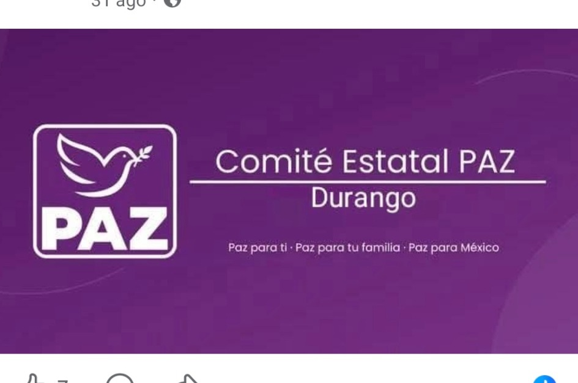
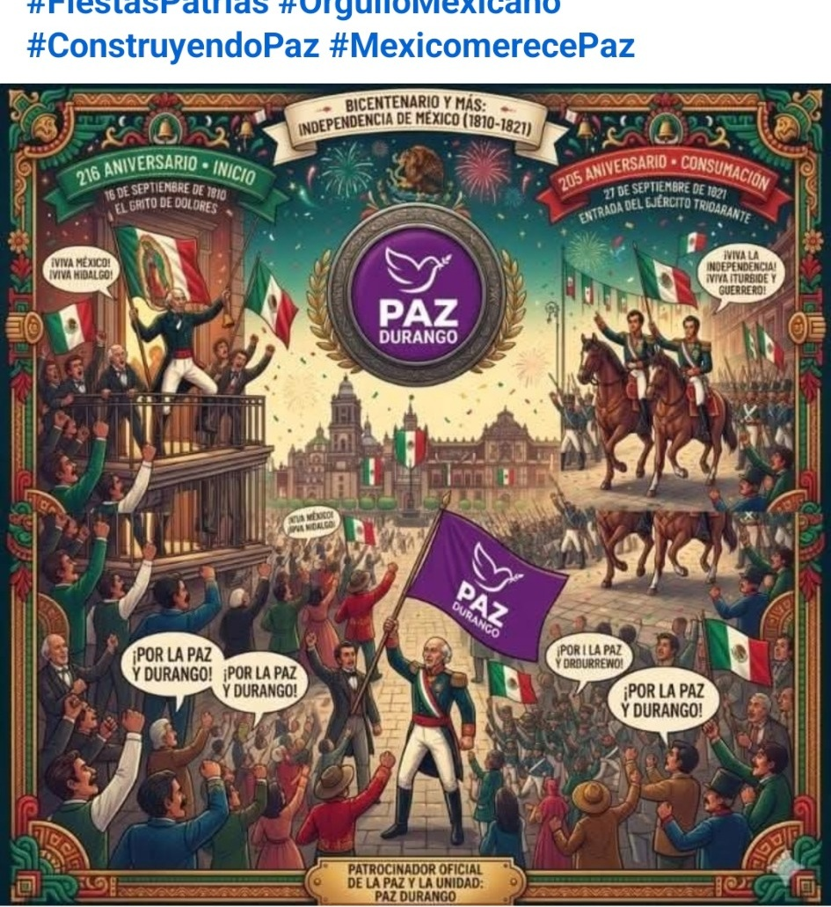
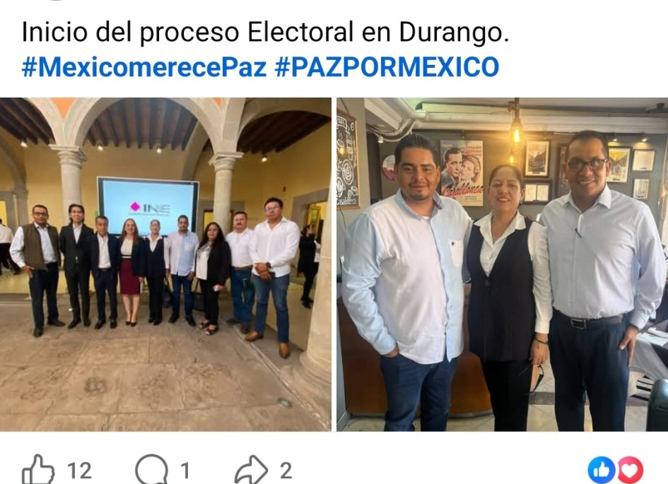
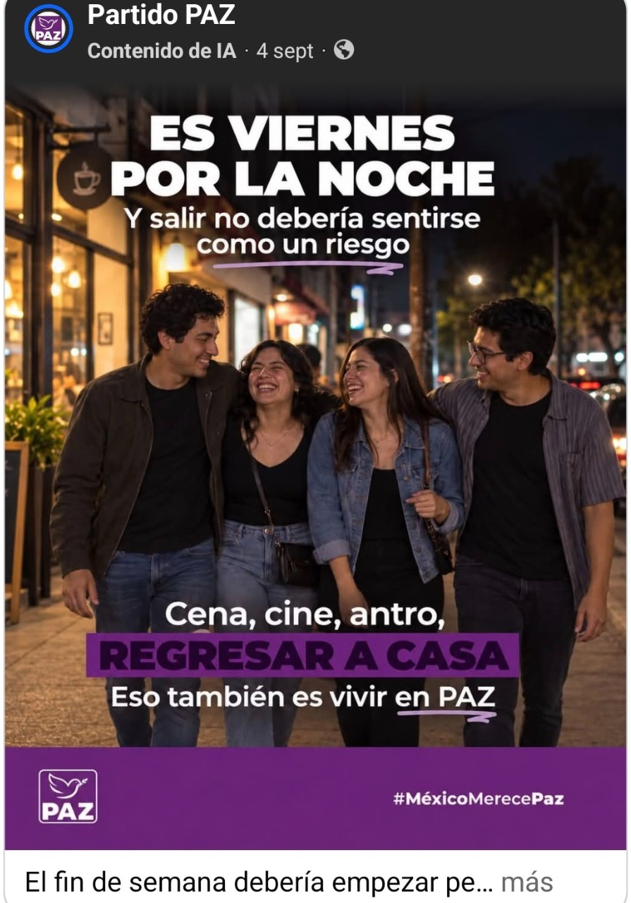

Comité Estatal
Espacio para presentar estructura, representación estatal, documentos, comunicados y actividades.
Una propuesta web institucional inspirada en la imagen que ya utiliza el Comité Estatal: morado profundo, composición sobria y elementos visuales asociados con la historia, la vida pública y la identidad duranguense.
La estructura separa información del comité, actualidad, participación en procesos públicos, contenido social y vías de contacto.

Una estética distinta a las demás versiones, con acentos dorados, arena y verde.
La línea gráfica usa el morado institucional como base y añade tonos tierra y dorados para diferenciar el sitio sin perder la identidad nacional de PAZ.
Espacio para presentar estructura, representación estatal, documentos, comunicados y actividades.
Morado institucional acompañado por dorado, arena y verde para dar una presencia propia al estado.
Noticias, agenda pública, actividades del comité y materiales informativos agrupados por tema.

Las publicaciones compartidas incluyen contenido conmemorativo de la Independencia de México. En la web, este tipo de material puede tener una sección propia con contexto, fecha y archivo histórico.
Así el contenido deja de perderse en el flujo de redes sociales y queda disponible como parte del archivo institucional.
La página puede presentar las actividades públicas en tarjetas claras, con fecha, categoría, imagen y enlace a la publicación original.

Espacio para registrar participaciones, reuniones y actividades institucionales relacionadas con el proceso electoral.
Galerías y notas breves permiten conservar un registro ordenado de actividades públicas y reuniones.
Entre el contenido compartido aparece también el tema de salir por la noche sin miedo. En una web institucional, estos materiales pueden clasificarse por seguridad, familia, juventud, convivencia y otros asuntos públicos.

La web también puede separar contenido estatal de publicaciones nacionales para que la navegación sea más clara.
Registro de congresos, tomas de protesta, encuentros y otras actividades partidistas.
Una sección permanente para integrantes, estructura, documentos y vías oficiales de contacto.
Esta demo está lista para GitHub Pages y puede ampliarse después con formularios, agenda, directorio, documentos descargables, noticias y enlaces oficiales.